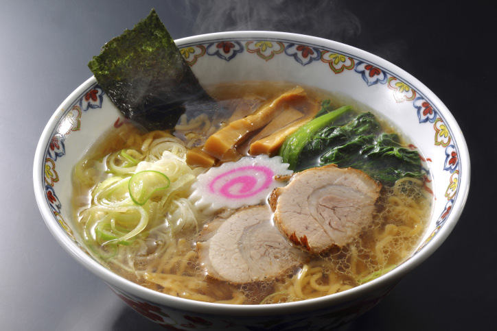
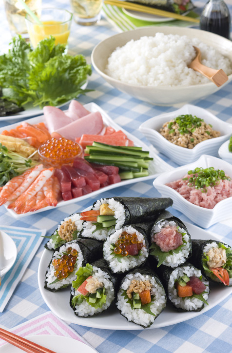

Ramen is a Japanese noodle meal. It originated from a Chinese noodle meal, which changed when it came to Japan. Japanese ramen has spread worldwide. There are different kinds of ramen based on the soup flavor. For example, shoyu ramen (soy sauce ramen), shio ramen (salt ramen), and miso ramen. Ramen served in a milky soup made from pork bone broth is known as tonkotsu ramen (pork bone ramen). In different parts of Japan, you can find local variations called gotoochi ramen. For example, Hakata ramen in Fukuoka has thin noodles served in tonkotsu soup. Sapporo ramen in Sapporo, Hokkaido, is often made by adding butter and corn to miso-based soup. Kitakata ramen in Fukushima features thick curly noodles in a light, soy sauce-based soup.
Maki-zushi (rolled sushi) is a type of sushi. It is made by putting rice and other ingredients on top of seaweed, and then rolling everything into a roll. Temaki-zushi (hand-rolled sushi) is a type of maki-zushi. In this case, the person eating the rolled sushi makes it themselves. Temaki-zushi is easy to make, so it is a popular food for home parties. Ingredients for temaki-zushi are tuna, salmon, shrimp, and other types of seafood. Also, cucumbers, avocado, fried eggs, kanpyoo (dried gourd shavings), and nattoo (fermented soybeans